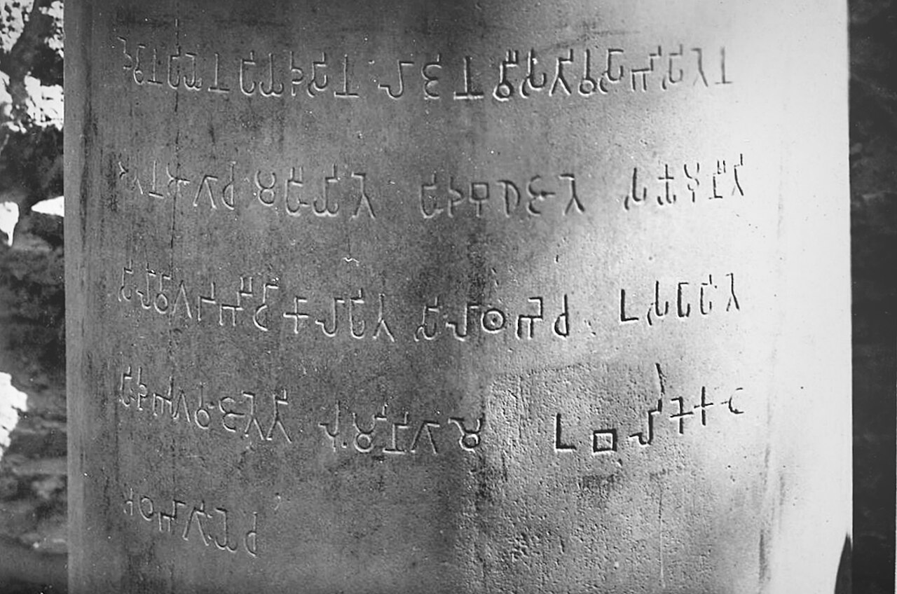
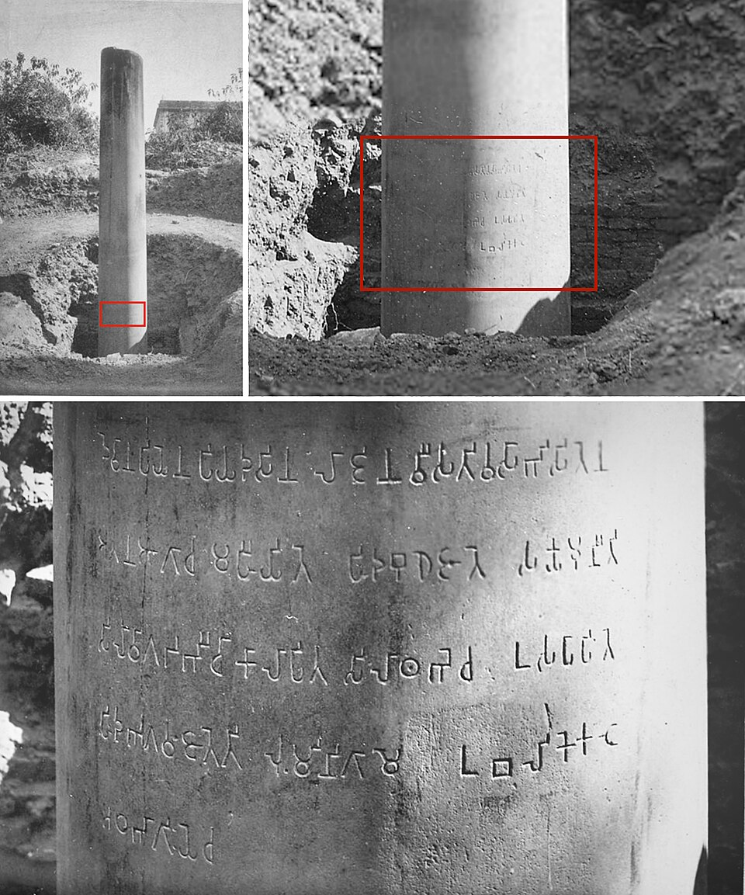
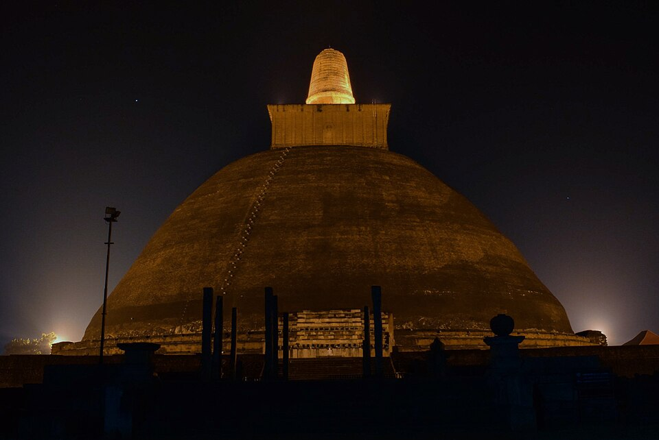
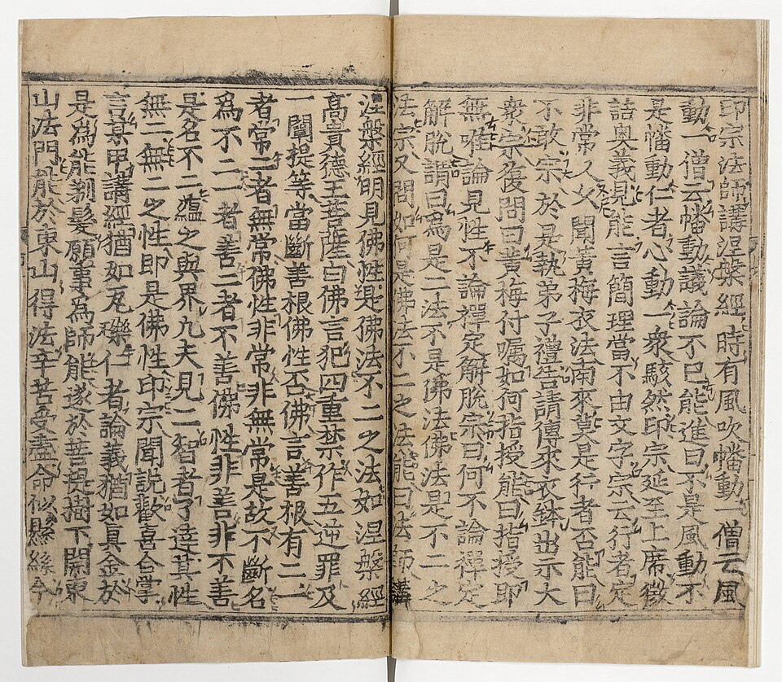
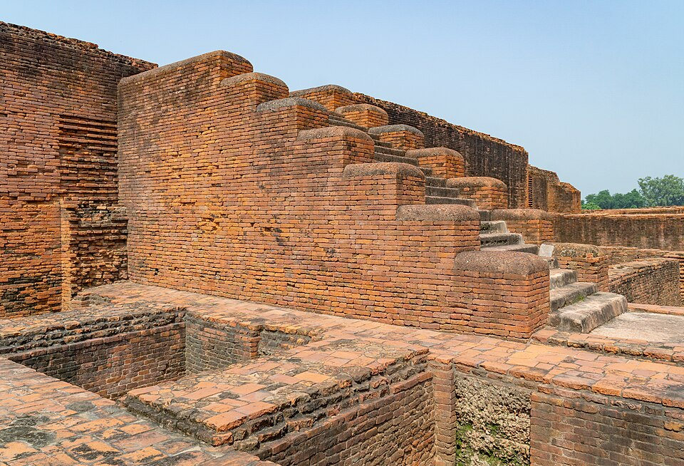

巴利 SN 20.7（無JS靜態對照）
鼓身木框（pokkharaphalaka）裂開後反覆打入木楔（āṇi），終至原木消失、只剩木楔聚（āṇisaṅghāṭo）。比喻後代忽視如來深奧空相應經，偏好詩人華麗辭藻。
假設今天有個人跑來對你說：「我親耳聽過佛陀這樣講！」你該不該馬上點頭？早期《大般涅槃經》（DN 16）與漢譯《長阿含》第2經《遊行經》（DA 2）描寫佛陀最後旅途，主動教弟子怎麼面對四種不同「權威來源」的轉述。DN 16；DA 2（研究對讀） 來源索引
（白話重述）有比丘宣稱：「我親自從佛陀聽到、領受這項法與律。」
有比丘宣稱：「我在某住處有上座領導的僧團面前親聞此說。」
有比丘宣稱：「我在多位博學持法、持律、持本母的長老前領受此說。」
有比丘宣稱：「我從某位博學持法、持律的長老親自聽到。」
不應不信，亦不應毀；當於諸經推其虛實，依律、依法究其本末。《長阿含經》第2經《遊行經》，T01, no. 1, 17c04–06。古漢文短引。查看研究對讀
第一位：聲稱親聞佛陀 — 「我在佛陀面前親耳聽到、親手領受這套法與律。」
請點選上面四位來客與三種處理方式；沒有任何一位可跳過查證。
已檢驗來客：0／4 位（無任何一位可免查）
| 文獻／傳統 | 比對標準 | 歷史學意義與限制 |
|---|---|---|
| 巴利 DN 16／AN 4.180 | 經（sutta）、律（vinaya）兩項 | Sujato 討論當時 sutta 未必指今日封閉整部經藏，可能指早期教法綱要（本母／四諦）。 |
| 法藏部《長阿含》DA 2 | 諸經、律、法 三項（T01, 17c） | 較巴利多出「依法」，顯示口傳與翻譯層次差異。 |
| 《增壹阿含》EA 28.5 | 契經、律、阿毘曇、戒（T02, 652b） | 將「阿毘曇」列入，反映較晚期三藏分類形成後的編輯痕跡。 |
| 吐魯番梵本 SF 245 | 依契經不依人；驗經、律、法性（dharmatā） | Waldschmidt 刊本 Wal 24.2–13 明文對比「依經不依人」。 |
| 律藏《大品》／後世四依 | 律制四大標準（Kd 6）／依法不依人等四依 | Lamotte 研究指出三者功能與時代不同，不可混為一談。 |
古代有面名叫阿能訶（Āṇaka）的鼓。巴利《相應部》SN 20.7 說它裂開時人們不斷打入木楔（āṇi），直到原本的木鼓框完全消失；漢譯《雜阿含經》SA 1258 則說這面鼓聲音原徹四十里，破後改繃牛皮纏補，美聲卻再也回不來，最後皮剝落唯餘聚木。連「警告傳承變質」的故事本身，在不同傳承裡也有異文！SN 20.7；SA 1258（研究對讀） 來源索引
雙版本視覺對照 · 同一面鼓（教學示意，非原經比例）
巴利版 SN 20.7：鼓身裂開後反覆打入木楔（āṇi），原木框逐漸消失。
尚未修補。
提醒：五片木楔與合成音效僅作教學示意（合成音效不代表古代鼓聲，且不冒充原經步數）；兩版本各自保存不同細節，不能互相取代。
鼓身木框（pokkharaphalaka）裂開後反覆打入木楔（āṇi），終至原木消失、只剩木楔聚（āṇisaṅghāṭo）。比喻後代忽視如來深奧空相應經，偏好詩人華麗辭藻。
鼓聲原徹四十里（T02, 345b），裂後以牛皮周匝纏縛而失美聲，後皮大剝落唯餘聚木。比喻不修身戒心慧、忽視空相應隨順緣起法而專崇世俗雜論。
《中部》第47經《思察經》（MN 47）與漢譯《中阿含》第186經《求解經》（MA 186）記載：如果你不會讀心術，怎麼知道一位老師是否真如他所宣稱那樣覺悟？經文說，連佛陀自己也可以用眼睛看、耳朵聽來調查。MN 47；MA 186 來源索引
眼見耳聞的言行中有無貪瞋癡混雜的跡象？
是剛起步裝出來的，還是長期（dīgharattaṁ）一貫如此？
名氣與供養大增後，是否出現新的過患或傲慢？
是因害怕才守規矩，還是真能離欲？（仍限於可觀察言行與對談查驗。）
【情境一：成名前（虛構示範）】該老師生活簡樸、講解有條理，但你只相處兩週，尚未見過他面對金錢與衝突。
請依可觀察言行選擇判斷。
不同宗教導師來到伽藍人住的小鎮，每位都稱讚自己、貶低別人，讓尚未歸信的居民十分困惑。巴利《增支部》AN 3.65 提出十種「不可單憑」的理由；漢譯《中阿含》第16經《伽藍經》（MA 16）則沒有那十條清單，而是直接切入貪瞋癡與善惡行為。千萬別把這部經誤讀成「只信自己喜歡的就是對」！AN 3.65；MA 16；Bodhi (1988) 來源索引
巴利 AN 3.65：先列「十種不應單憑的理由」，接著問貪瞋癡是否導致傷害、智者讚責何者，最後給出四種安穩。
| 不能單憑 | 今天的例子 |
|---|---|
| 口傳（anussava） | 大家一直這樣說 |
| 師徒傳承（paramparā） | 祖師代代相傳 |
| 傳聞（itikirā） | 群組與網友都在轉發 |
| 經典收集（piṭakasampadā） | 書裡或藏經裡有寫 |
| 邏輯推理（takkahetu） | 聽起來很合邏輯 |
| 推論（nayahetu） | 看一件事推測全部 |
| 思量外相（ākāraparivitakka） | 感覺想通了就一定對 |
| 符合己見（diṭṭhinijjhānakkhanti） | 正好符合我本來立場 |
| 說者看似有能力（bhabbarūpatā） | 學歷高、外表莊嚴可信 |
| 尊敬自己的老師（samaṇo no garu） | 因為他是我師父 |
第一安穩：若確有來世與善惡業報，不懷怨害、清淨行善者死後可生善處（經典觀點，非科學已證實來世）。
（無JS靜態完整對照：①若有來世得善趣；②若無來世今生亦無怨無惱受智者稱譽；③若惡有惡果則無須恐懼；④若惡無此果今生仍清白。此思考不保證善人現世永不受天災或他人傷害。）
佛陀探望年輕的羅睺羅，洗完腳後沒有直接講大道理，而是拿起洗腳盆做了一連串動作：倒到剩一點點、全倒光、反蓋在地上、再翻回正面——藉此警告「故意說謊卻不知羞恥」的人，他的修行實質就跟空盆一樣。經文還用戰場上的王象和每天照臉的鏡子作比喻。MN 61；MA 14《羅云經》 拜拉特石刻交叉佐證
初始盛滿水的洗腳盆：準備開始操作（MN 61／MA 14）。
王象譬喻脈絡：古印度戰象上陣時前腳、後腳、頭耳牙尾皆用來戰鬥，唯獨保護長鼻；一旦連長鼻也不顧，代表毫無底線。經文以此比喻故意妄語不知羞愧者（《中阿含》14）。
做之前（鏡前自照）：先想這句話或行動會不會傷害自己、別人或雙方？若會傷害，盡力不做。
點選答案，這裡會顯示理由。
不按也能讀：B。前3世紀阿育王拜拉特石刻明文推薦「對羅睺羅關於妄語的教誡」，證實此教誡主題早於前3世紀已流傳，但不等於證明整部經每字不變。
摩訶波闍波提請佛陀給一句簡要可守持的教法。巴利《增支部》AN 8.53（亦見律藏《小品》Cv 10.5）給了八組清楚的「方向羅盤」——看一套教法是令人更貪婪執著、增加負擔，還是越來越少欲知足、平靜易處。AN 8.53；AN 7.83；Cv 10.5 來源索引
| ✓ 趨向解脫方向 | × 相反方向 |
|---|---|
| 離貪（virāga） | 增長貪染（sarāga） |
| 離繫縛（visaṁyoga） | 增加束縛（saṁyoga） |
| 拆解／減少積聚（apacaya） | 追逐積聚（ācaya） |
| 少欲（appicchatā） | 擴張欲求（mahicchatā） |
| 知足（santuṭṭhi） | 不滿足（asantuṭṭhi） |
| 遠離紛擾（paviveka） | 沉迷群聚紛擾（saṅgaṇikā） |
| 精勤（vīriyārambha） | 懈怠（kosajja） |
| 易於供養／不造成負擔（subharatā） | 難以供養／增加負擔（dubbharatā） |
【分享正確資訊而不藏私炫耀】方向趨向「少欲、不積聚（apacaya）、離貪」——減輕占有與攀比（生活比喻，非果位判定）。
提醒：此八項是用來檢驗「教法的修行實效方向」，不能用來鑑定某部經「是否為歷史佛陀親口原話」，也絕不否定在家人正當工作養家。
《中部》MN 95《商伽經》指出五種常見依據——信仰、喜好、口傳、推理、見解忍可——在現實中都可能「誠信卻為空虛謬誤」，也可能「不信卻真實無誤」。因此經文提出三道階梯，第一階就叫「守護真理」：誠實說「這是我的信念」，而不獨斷宣告「只有我對，其他都是愚妄」。MN 95:14, 19–21 來源索引
「某高僧有天眼通能預知大樂透」
請選擇這則主張目前較適合歸類於哪一層（MN 95 五依據皆可真可假）。
| 不嚴謹 | 可查證的表達 |
|---|---|
| 佛陀一定親口說過 | 某部經記載佛陀說過 |
| 傳承絕對不變 | 目前可追溯記錄如此 |
| 師父一定開悟 | 觀察到言行與教導相符，內心非我所能測 |
| 法門一定有效 | 我在特定條件下觀察到部分效果，仍有條件限制 |
| 感應到佛菩薩所以證明存在 | 我有主觀經驗，成因仍待查 |
| 我的信仰是真理，其他都錯 | 這是目前信念，尚須查證 |
傳世佛經歷經數百年口耳相傳與抄寫，有沒有不靠宗教傳說、能用物質材料獨立查證年代的線索？有！最重要的是西元前3世紀孔雀王朝阿育王石刻，以及西元前1至後4世紀的犍陀羅樺樹皮手稿。阿育王碑銘研究 犍陀羅寫本

影像暫時無法載入（離線或網路受限）。
您仍可透過官方館藏查閱：藍毘尼（UNESCO 666）、Hultzsch 1925 CII Vol. I（Archive.org）、犍陀羅 BL Or. 14915（Wikimedia Commons CC0）與 LOC 2018305008。
先看實物：石柱表面刻有五行垂直整齊的古代幾何筆畫字母（婆羅米文），第2行右段可見「Budha Sakyamunī」字跡。
轉寫與譯意：天愛喜見王登基第20年親自參訪禮敬，因『釋迦牟尼佛（Budha Sakyamunī）』生於此地而立石柱，減免藍毘尼村稅賦為八分之一。
權利與限制：Public Domain（ASI 1896）。證明前3世紀聖地認定；不證明出生走七步或出生年分。
目前縮放：100%

館藏／來源：ASI 1896（Public Domain via Wikimedia Commons）；UNESCO 666。證明西元前3世紀已紀念釋迦牟尼誕生地，但未證實出生年份或走七步神話。見來源

館藏／來源：大英圖書館 BL Or. 14915（CC0）；另見 美國國會圖書館 2018305008（官方連結，館方網站限制自動擷取）。Split 藏本《八千頌般若》C14 測年約 75 CE（2σ 47–147 CE）。見來源
| 碑銘證據 | 可以確認的歷史事實 | 不可自動推論的範圍 |
|---|---|---|
| 藍毘尼石柱 | 王權支持佛教聖地與紀念活動 | 不證明佛陀出生走七步或全部佛傳生平 |
| 拜拉特（Bhabra）碑銘 | 國王推薦七項佛教教導供僧俗信眾學習（含羅睺羅妄語教誡） | 不證明今日整部尼柯耶／阿含已於前3世紀逐字定本 |
| 僧團分裂相關詔令 | 王權以行政介入僧團秩序與分裂問題 | 不獨立證實南傳編年史第三次結集的全部細節 |
| 尼迦利薩格爾石柱 | 當時已存在過去佛（拘那含佛）信仰及佛塔崇拜 | 不證明過去佛神話傳記為歷史事實 |
大犍陀羅地區出土的樺樹皮卷（BL Or.14915、Senior、Bajaur 與 Split 藏本）整體跨越公元前1世紀至公元4世紀，是實存至今且可測年的物質手稿；相較之下，斯里蘭卡阿盧寺於前1世紀寫定巴利三藏的說法出於《大史》等數百年後的編年史記載，該批前1世紀原始貝葉早已散佚不存（較晚期藏經樓亦於1848年焚毀）。寫本與編年史對比
點選答案，這裡會顯示理由。
不按也能讀：B。一件實物只能支持與它性質相符的具體命題。
佛滅後數百年間，僧團靠口耳相傳保存教法。這是不是就像派對裡的「傳話遊戲」一傳就全走樣？Alexander Wynne（2004）研究指出，早期僧團對戒本與定型句採行高度紀律化的集體背誦與校對；但 Mark Allon（2022）與臺灣佛學期刊（越建東 2007；溫宗堃 2010）對比巴利與漢譯阿含，也確認經文確實經歷增刪、模板化編輯與改寫。Allon 2022；Wynne 2004 來源索引
請選擇上方情境，比較「集體穩定保存」與「邊緣異文增刪」（示範模擬，非歷史機率）。
| 影響因素 | 可能造成的結果 |
|---|---|
| 長期口耳相傳 | 遺漏、記憶偏差、內容擴寫（整齊亦可能源於後期模板化編集） |
| 語言與文字轉換 | 原始概念被重新解釋 |
| 宗派競爭 | 新增支持自身立場的教義；消失派別僅剩對手描述 |
| 政治權力介入 | 選擇性保存、禁止或改造經典 |
| 戰爭與宗教迫害 | 寺院、文獻與傳承者消失 |
| 經濟與生存需求 | 宗教儀式、祈福與喪葬服務增加 |
| 地方文化融合 | 吸收當地神祇、習俗與價值觀 |
| 性別與社會階級 | 教義及出家制度受到社會結構影響 |
| 祖師權威與正統競爭 | 建構祖師世系、追溯神聖來源 |
| 後世抄寫與編輯 | 註解混入正文、不同版本合併 |
| 殖民與現代化 | 佛教被重新包裝成哲學、科學或民族文化 |
歷史上的喬達摩大約活動於西元前5世紀，但從佛陀入滅到阿育王石刻（前3世紀中葉）之間相隔約一個半世紀，是史料最薄弱的斷層。這裡整合現代學術約略年代（不採單一宗派佛曆，且各地區發展不同步）、佛陀生平證據評估，以及歷次結集的不同記載。歷史佛陀與年代 結集史料分析
沙門運動與歷史佛陀｜地區：恒河中游（今北印／尼泊爾南）
史料可信：高；生平細節未定 — 喬達摩在多元沙門競爭環境中教導；佛滅確切年份仍有約前5世紀區間爭議。
| 流傳說法 | 歷史證據評估 |
|---|---|
| 曾有一位稱為喬達摩的修行導師 | 高 |
| 活動於古印度北部及今尼泊爾南部一帶 | 高 |
| 建立修行者團體並傳授解脫方法 | 高 |
| 出身具有一定社會地位的釋迦族 | 中高 |
| 是現代人理解的王國王子 | 中低（可能有後世王室化描寫） |
| 29歲出家、35歲成道、80歲入滅 | 傳統記載，精確年齡未獲獨立證實 |
| 出生時走七步並宣告天上天下唯我獨尊 | 無獨立歷史證據 |
| 菩提樹下遭遇魔王及超自然事件 | 歷史方法無法驗證 |
| 具有宿命通、天眼通等神通 | 歷史方法無法驗證 |
| 後世佛傳的全部對話及事件 | 不可直接當成逐字史實 |
| 時期 | 主要歷史發展 | 史料可信程度 |
|---|---|---|
| 西元前600～400年 | 古印度沙門運動興起，釋迦牟尼活動於此環境 | 高；個人生平細節較低 |
| 西元前400～300年 | 佛陀入滅後，僧團口傳、戒律爭議與早期分化 | 中 |
| 西元前268～232年左右 | 阿育王統治，佛教獲得強大政治支持 | 極高 |
| 西元前300～100年 | 部派佛教逐漸發展，各自傳承經律 | 高 |
| 西元前100～西元200年 | 早期佛教手稿、大乘經典逐漸出現 | 高 |
| 西元100～500年 | 大乘思想、般若、中觀、瑜伽行派逐漸發展 | 高 |
| 西元100～600年 | 佛教廣泛進入中國、中亞、朝鮮、日本 | 高 |
| 西元500～1000年 | 印度密教發展，漢地宗派與藏傳佛教成形 | 高 |
| 西元1000～1300年 | 印度大型寺院衰退；斯里蘭卡僧團重整 | 高 |
| 西元1200～1600年 | 上座部佛教在東南亞多地確立主流地位 | 高 |
| 西元1600～1900年 | 國家宗教制度、殖民統治、宗派改革 | 極高 |
| 西元1900年至今 | 佛教現代化、人間佛教、全球禪修與心理學化 | 極高 |
| 結集 | 傳統敘述 | 歷史學評估 |
|---|---|---|
| 第一次結集 | 佛滅後500阿羅漢共同背誦經律 | 多部律藏共有集體傳誦記憶，但1974年結集史研究等對會議細節與完整經藏當時完成之說高度存疑 |
| 第二次結集 | 約百年後因戒律問題召開會議 | 具較強歷史基礎，但是否直接造成第一次部派分裂仍有爭議 |
| 第三次結集 | 阿育王支持僧團清除異端（主要據南傳史書記載） | 王權介入僧團秩序有碑銘支持；南傳《善見律》會議細節非所有部派共認，欠獨立佐證 |
| 第四次結集 | 完成經典書寫或論藏整理 | 南傳斯里蘭卡與北傳迦膩色伽王所稱第四次結集實屬不同事件，不可混談 |
佛教不是從一開始就「一分為二或分成十八個整齊分支」。南傳《島史》把根本分裂歸因於毘舍離十事非法、說一切有部歸因於「大天五事」、《舍利弗問經》歸因於戒律增廣；Nattier 與 Prebish（1977）指出根本分裂早於阿育王（約佛滅116年前後）且偏重戒律實務分歧。更重要的是：今天的上座部不等於古代全部上座系，大乘也不是由大眾部單線分出的單一宗派。部派分裂研究 早期核心與五語無我
南傳上座部：保存巴利尼柯耶與上座部律，但經12世紀統合與18世紀傳戒重建，非完全等同古代全體上座系。
| 部派 | 主要歷史特色 |
|---|---|
| 大眾部 | 部分支系發展出較超越人間的佛陀觀 |
| 說一切有部 | 對時間、存在及現象分類提出高度系統化的理論 |
| 經量部 | 重視經典，相對批判部分論藏理論 |
| 犢子部及相關部派 | 探討無我與人格延續之間的哲學問題 |
| 法藏部 | 其戒律傳承對今日漢傳佛教具有重要影響（四分律） |
| 南傳上座部 | 保存完整巴利三藏及自身的註釋傳統 |
| 根本說一切有部 | 其戒律成為藏傳佛教的重要制度基礎 |
【巴利文 SN 22.59（已完整核對）】Rūpaṁ, bhikkhave, anattā... ‘netaṁ mama, nesohamasmi, na meso attā’ti（色非我…這不是我、非我所）。
| 教義或修行內容 | 屬於早期佛教可信程度 | 白話解釋 |
|---|---|---|
| 苦、集、滅、道（四諦） | 高 | 認識痛苦、找出成因、理解解除痛苦的可能與方法 |
| 八正道 | 高 | 從認知、言行、生活方式及精神訓練著手 |
| 無常 | 高 | 一切有條件形成的事物都在變化 |
| 無我 | 高 | 不將身心經驗執著為永恆、不變且可完全控制的自我 |
| 緣起 | 高 | 現象依賴條件形成，而非完全獨立存在 |
| 五蘊 | 高 | 透過身體、感受、辨識、心理活動與識分析經驗 |
| 戒律與倫理 | 高 | 約束傷害他人的行為及不善的生活方式 |
| 禪定與正念 | 高 | 訓練注意力、覺察與心的穩定 |
| 貪、瞋、癡 | 高 | 欲望執著、敵意與錯誤認知是重要痛苦來源 |
| 業力、輪迴 | 高 | 早期教義已存在，但超越死亡的真實性非歷史學或現代科學能驗證 |
| 涅槃與解脫 | 高 | 佛教早期的核心修行目標 |
| 完整阿毘達磨理論體系 | 較晚形成 | 對早期思想進一步分類、系統化與哲學分析 |
| 比較項目 | 南傳上座部 | 漢傳佛教 | 藏傳佛教 |
|---|---|---|---|
| 早期經典保存 | 完整巴利經藏 | 保存重要阿含經及其他早期文獻 | 保存部分早期經律及其他印度文獻 |
| 主要戒律來源 | 上座部律藏 | 法藏部四分律 | 根本說一切有部律 |
| 後世哲學發展 | 阿毘達磨及註釋傳統 | 中觀、唯識、天台、華嚴等 | 中觀、唯識、密教及論辯傳統 |
| 地方文化融合 | 南亞及東南亞文化 | 儒家、道教與地方信仰 | 西藏及喜馬拉雅地區文化 |
| 政治干預 | 王室僧團改革、殖民與國家制度 | 皇帝支持、滅佛、國家管理 | 王室支持、宗派政治及政教制度 |
| 傳承中斷及重建 | 有 | 有 | 有 |
| 後世編纂與註釋 | 有 | 有 | 有 |
| 祖師權威與傳承敘事 | 有 | 有 | 有 |
| 宗教儀式與民間信仰 | 有 | 有 | 有 |
| 能證明完整保存佛陀原始教導 | 無法 | 無法 | 無法 |
許多人以為南傳上座部兩千五百年來完全沒有改變，但「經典早年保存」與「現行宗派制度」必須分開。古代斯里蘭卡至少並存大寺、無畏山寺與祇陀林寺三大僧團中心；12世紀王權統合後大寺派才取得主導；18世紀中期斯里蘭卡具足戒更曾斷絕，須迎請暹羅與緬甸重新傳戒。Deeg (2024)；Gethin (1998) 來源索引

攝於2016（Nicolas Chadeville, CC BY 4.0）。曾接納大乘與多元思想，12世紀統合後失去獨立機構地位（當代外觀含近代修復）。

攝於2018（Nipuna Gamage, CC BY-SA 4.0）。反映古代斯里蘭卡僧團多元並立格局。
| 僧團 | 歷史特色 |
|---|---|
| 大寺派（Mahāvihāra） | 5世紀覺音整理義註《清淨道論》，12世紀波羅迦羅摩跋訶一世統合後成為現代上座部主要制度與文獻來源 |
| 無畏山寺派（Abhayagiri） | 曾經接觸及接受較多不同佛教思想與修行傳統；Max Deeg (2024) 指出其歷史常被大寺編年史遮蔽 |
| 祇陀林寺派（Jetavana） | 具有自身的僧團及思想傳承，12世紀統合後不再獨立 |
【大寺派（Mahāvihāra）】保存巴利三藏與覺音（約5世紀）《清淨道論》義註傳統，12世紀（約1165）在王權支持下取得主導。

攝於2006（Wagaung, CC BY-SA 3.0）。UNESCO 世界記憶列 729 塊經文大理石碑（不含另有說明碑；勿誤作 730 塊經文碑）。見詳頁校勘
大乘佛教約在西元前後於古印度文化圈逐步萌芽。Harry Falk 與辛嶋靜志（2012）公布 Split 藏本《八千頌般若》犍陀羅語樺皮殘卷，碳十四測年約西元75年（2σ 區間 47–147 CE），證明早期大乘經典確實出於印度文化圈，並非中國人憑空創造。同時 Paul Harrison、Gregory Schopen 與 David Drewes（2010）也已推翻「大乘是由反抗僧團的在家居士所創立」的過時舊說，改以出家僧尼在保守寺院中主導書寫與受持的「多條交織河道（braided stream）」解釋。Split 寫本與大乘起源研究 來源索引
慈悲：早期阿含／尼柯耶已有四無量心（慈悲喜捨），屬跨傳承共同基礎。
定義一（歷史學）：指西元前5世紀歷史上的釋迦牟尼本人實際說出的言論。依此標準，成熟大乘經典缺乏足夠直接證據。
| 思想 | 與早期佛教的關係 |
|---|---|
| 慈悲 | 早期佛教已存在 |
| 菩薩概念 | 早期文獻已有相關概念（多指釋迦牟尼成道前），大乘發展成普遍修行道路 |
| 般若與空性 | 與早期無我、緣起有思想關聯，後來形成更完整哲學體系 |
| 六波羅蜜 | 相關修行精神具早期基礎，完整六度體系經後世發展 |
| 無量佛及佛國 | 具有較早思想基礎，後世大幅擴充 |
| 阿彌陀佛與西方極樂世界 | 屬於後來發展的淨土信仰系統 |
| 如來藏、佛性 | 後期印度大乘重要思想發展 |
| 唯識學 | 約西元4–5世紀逐漸形成高度系統化理論 |
| 完整三身佛理論 | 後世佛教對佛陀身分及存在形式的哲學發展 |
中國古代佛教界自己（東晉道安、南朝梁僧祐《出三藏記集》）早就編寫「疑經錄」辨別經典來源。中華電子佛典協會（CBETA）也明言收錄不等於真偽認證。面對本土撰述經典（Robert Buswell 稱 indigenous scriptures），更須區分「文本出自哪裡」與「作者是否蓄意詐欺」。16類文獻與疑經研究 心經假說對讀 楞嚴 T945 vs T642
【Nattier (1992) & Attwood (2021)：印度般若經 → 羅什漢譯 → 漢地摘編《心經》→ 回譯梵文】比對出羅什《大品般若》措辭重疊與梵本語法痕跡（Attwood 2021 分析 22 個比較點，本站尚未逐一核對其全文22點）；但仍不能證成作者有意欺騙。
唐代《大佛頂首楞嚴經》（T945）與鳩摩羅什譯自印度原本的《首楞嚴三昧經》（T642）是兩部不同經典，不可藉經名相似混同來源；Jia（2022）重新考察房融參與翻譯潤色的跨文化互動。
Victor Mair（2012）指出教科書常說「魏晉廣泛用老莊語彙譯經叫格義」係近代建構；史料中原意僅短暫用於對應印度名數清單（numbered lists）的講經分類法。
| 經典或文獻 | 歷史研究評估 | 直接出自釋迦牟尼的證據 |
|---|---|---|
| 巴利四部尼柯耶 | 保存大量早期佛教內容 | 相對較強，但非逐字證實 |
| 漢譯四阿含經 | 保存不同印度部派的早期經文 | 相對較強，須逐篇比對 |
| 《法句經》 | 不同傳承保存相關古老偈頌（故事義註較晚） | 部分內容具較強早期證據 |
| 《經集》 | 部分篇章具古老語言與思想特徵 | 相對較強，內部仍有年代差異 |
| 《金剛經》T235 | 印度大乘般若經典 | 缺乏直接證據 |
| 《法華經》T262 | 早期印度大乘經典，具不同形成層次 | 缺乏直接證據 |
| 《華嚴經》T278/T279 | 多個印度大乘文獻逐漸集合形成 | 缺乏直接證據 |
| 《阿彌陀經》T366 | 印度及中亞淨土思想傳統 | 缺乏直接證據 |
| 《無量壽經》T360 | 具不同語言及版本的淨土經典 | 缺乏直接證據 |
| 《心經》T251 | 具強漢地編纂研究證據及不同學界解釋 | 極弱 |
| 《楞嚴經》T945 | 印度來源、漢地編集及翻譯長期爭議（勿混T642） | 極弱 |
| 《大乘起信論》T1666 | 作者與翻譯歸屬高度質疑，多學者判為6世紀中國著作 | 本身是論書，非佛陀直接教導 |
| 《盂蘭盆經》T685 | 具有漢地宗教文化編集高度疑慮 | 極弱 |
| 《父母恩重經》 | 具明顯漢地孝道文化與本土撰述特徵 | 極弱 |
| 《六祖壇經》T2008 | 中國禪宗文獻，有不同歷史版本 | 本身是祖師文獻，非釋迦牟尼教導 |
| 佛教密續 | 主要在西元7世紀以後發展成熟 | 極弱 |
佛教進入重視家族宗法、孝道與王權的漢地社會後，經歷深刻調適。但務必避免「古印度不重視孝道、也不禁肉，全都是中國發明」的粗略對立！Gregory Schopen（1997）、John Strong（1983）與廣興（2005）指出早期印度佛經早已稱父母為「梵天」與「初師」（《善生經》DN 31／DA 16 亦明訂奉養父母）；而柯嘉豪（John Kieschnick, 2005）則追蹤早期三淨肉律規如何在《大般涅槃經》與梁武帝推行下，經歷數百年於公元10世紀左右確立為漢傳僧團普遍素食正統。孝道調適研究 MN 55 與素食史
【孝親與家族張力（模擬比較）】早期印度經典（如 DN 31／DA 16《善生經》、AN 2.31）本已重視奉養父母，稱父母為「梵天、初師」；但中國宗法強調不婚無後之不孝，佛教遂發展出家大孝、四重恩、盂蘭盆超度等制度調適。
| 古印度出家佛教特色 | 中國社會面臨的衝突 | 後來的適應方式 |
|---|---|---|
| 離家出家 | 不奉養父母、家族傳承問題 | 強調出家也是報答父母恩情（如四重恩） |
| 不婚、不生育 | 不孝有三，無後為大 | 發展超度祖先與功德迴向（如盂蘭盆） |
| 托缽與接受供養 | 被部分士大夫批評不從事生產 | 發展寺院經濟、農業及勞作傳統 |
| 解脫輪迴 | 一般百姓更關注現實生活 | 發展祈福、消災、治病相關儀式 |
| 印度宗教宇宙觀 | 中國已有鬼神與祖先信仰 | 地獄、亡者及地方神祇信仰融合 |
| 外來宗教身分 | 與儒家、道教及王權競爭 | 發展護國佛教與本土化思想 |
| 說法 | 歷史評估 |
|---|---|
| 佛陀反對殺生 | 有很強的早期文獻基礎 |
| 佛陀要求所有佛教徒終生吃素 | 缺乏充分早期文獻支持（MN 55 許三淨肉；早律禁象馬犬蛇人肉等十種肉） |
| 大乘佛教發展出強烈素食倫理 | 有文獻證據（如《大般涅槃經》《楞伽經》等） |
| 中國皇帝推動僧團素食制度 | 有歷史證據（梁武帝6世紀斷酒肉，約10世紀確立為漢傳僧尼普遍規範） |
| 所有吃肉的南傳僧侶都違反佛陀戒律 | 不符合不同早期律藏的歷史記載（仍須守不見不聞不疑專為己殺三淨肉條件） |
傳統禪宗說釋迦牟尼在靈山拈花、只有迦葉微笑，經印度二十八祖傳至達摩來華。史丹佛哲學百科、John McRae、Albert Welter（2000）、石井修道（2000）與釋惠敏（2013）卻一步步在燈錄時間線上查出了「斷層」——這個故事是在北宋禪林逐漸結合定型的。拈花微笑斷層考證 禪宗九項主張與壇經
【早期大藏經與隋唐禪籍（含敦煌本《壇經》S.5475）】未載靈山拈花公案；敦煌本展現較早質樸面貌，與 1310 年高麗刻本字句增廣形成明顯對照。

重要區分：上圖為1310年高麗木刻版（BnF Coréen 110, Public Domain），屬後世增廣本，並非敦煌唐寫本。大英圖書館敦煌寫本 Or.8210/S.5475 受反爬蟲保護，依法以官方館藏連結提供查閱：IDP S.5475 官方頁面 ↗

大都會藝術博物館藏 MET 2015.300.71（CC0）。繪於達摩活動時代約一千年後，呈現後世宗教藝術形象，非達摩本人寫實肖像。
| 禪宗傳承說法 | 歷史證據評估 |
|---|---|
| 佛陀本人曾經修習及教導禪定 | 高 |
| 印度存在長期佛教禪修傳統 | 高 |
| 達摩具有歷史人物基礎 | 中高 |
| 達摩所有神異傳說 | 低 |
| 靈山拈花、迦葉微笑 | 高度可能為北宋後定型之傳承敘事 |
| 印度二十八祖完整逐代傳承 | 缺乏可靠的逐代證據 |
| 禪宗祖師傳承譜系經過後世整理 | 高 |
| 六祖慧能所有故事均為史實 | 不能成立 |
| 唐宋禪宗的形成與發展 | 高 |
早期佛教已有護持咒語等元素，但具備完整灌頂、本尊觀想與曼荼羅的成熟密續主要自西元7世紀起在印度發展。Christian Wedemeyer（2012）提醒我們勿將密教簡化為「墮落巫術」，而應放回中世紀印度大寺的知識體系與符號學中理解。傳入西藏後，既有大量印度失傳典籍的珍貴保存，也有苯教雙向互動、伏藏（11世紀起分地伏藏／意伏藏，曾受薩迦班智達批判）與轉世制度（13世紀噶瑪巴至1792清廷金瓶掣籤）。Wedemeyer 與印度密教 西藏八期與八主張
約779年赤松德贊建桑耶寺及吐蕃王室碑銘
請把這項說法放入對應的來源盒。

Lark Ascending (2011, Public Domain)。現存建築歷經多代毀建重修，非8世紀原構。
| 時期 | 重要變化 |
|---|---|
| 西元7～9世紀 | 吐蕃王室引進與支持佛教 |
| 約779年 | 赤松德贊支持桑耶寺與僧團制度 |
| 西元9～10世紀 | 政治動盪，佛教制度與傳承受影響 |
| 西元10～12世紀 | 後弘期再度興盛，大量引入印度佛教文獻 |
| 西元11～15世紀 | 不同藏傳宗派逐漸形成 |
| 西元15世紀 | 格魯派形成 |
| 西元17世紀 | 格魯派與蒙古政治軍事支持結合，形成新政教秩序 |
| 西元20世紀 | 政治衝突、宗教制度破壞及海外流亡傳承 |
| 傳承主張 | 歷史評估 |
|---|---|
| 印度密教文獻確實傳入西藏 | 高 |
| 西藏保存大量已在印度失傳的佛教文獻 | 高 |
| 蓮花生具有歷史人物基礎 | 有一定支持，生平傳說須區分 |
| 蓮花生所有神異事蹟 | 無法獨立驗證 |
| 伏藏經典由古代祖師預先隱藏，等待指定人物發現 | 須逐份檢驗（如桑傑喇嘛起分地／意伏藏，薩迦班智達曾系統批判），秘密來源難證實 |
| 透過精神感應取得古代經典 | 無法以一般歷史方法確認 |
| 活佛轉世者確實是前世人物再生 | 宗教信仰主張，歷史方法無法驗證（13世紀起形成制度、1792金瓶掣籤屬制度史實） |
| 密宗傳承可追溯至佛陀的完整秘密教法 | 缺乏充分直接證據 |
寺院需要土地、糧食、保護與抄經網絡。政權滅佛、殖民改造、戰火與官修大藏經（如北宋 971–983 年依《開元釋教錄》雕印首部木刻大藏經《開寶藏》），共同決定了後人讀得到什麼。至於印度北部大型寺院在11–13世紀的衰退，考古學家 Lars Fogelin（2015）強調不能單一歸咎突厥入侵，而必須看多重結構因素交織。政治與開寶藏 Fogelin 印度衰退研究

Sumitsurai (2023, CC BY-SA 4.0)。見證古代北印度大型僧院教育中心的物質規模。

Spotplayerx (2021, CC BY-SA 4.0)。部分東印度與邊緣佛教社群在大寺衰退後仍延續存在。
| 地區與事件 | 時間 | 歷史影響 |
|---|---|---|
| 阿育王支持佛教 | 西元前3世紀 | 提高佛教傳播能力及制度化程度 |
| 北魏滅佛 | 446年 | 寺院與僧團受到破壞 |
| 北周滅佛 | 574年起 | 宗教資產與僧團制度受到限制 |
| 唐武宗會昌滅佛 | 845年 | 寺院裁撤、資產沒收、大量僧尼還俗 |
| 斯里蘭卡僧團整合 | 12世紀 | 大寺派取得主導地位 |
| 印度北部佛教寺院衰退 | 11～13世紀 | 寺院教育、文獻及師承網絡嚴重萎縮 |
| 日本明治神佛分離 | 1868年起 | 佛教寺院及神佛融合制度受到衝擊 |
| 中國太平天國戰爭 | 1850～1864年 | 大量宗教設施遭破壞，戰後重新建立 |
| 英國殖民斯里蘭卡、緬甸 | 19世紀 | 佛教教育、民族認同與宗教改革受影響 |
| 泰國僧團法 | 1902年起 | 地方僧團受更集中國家制度管理 |
| 中國文化大革命 | 1966～1976年 | 寺院、文物及傳承活動受嚴重破壞 |
| 因素 | 歷史重要性 |
|---|---|
| 軍事入侵與寺院破壞 | 重要直接因素 |
| 王室轉移宗教資源 | 重要制度因素 |
| 寺院過度集中土地與資源 | 部分研究認為是結構性問題（疏離居士日常） |
| 與印度教傳統競爭及融合 | 長期因素（奉愛運動與哲學復興） |
| 商業活動及城市結構改變 | 地區性經濟因素 |
| 僧團與普通百姓關係改變 | 部分學者的重要解釋 |
| 師承、教育及抄經網絡瓦解 | 傳承中斷的重要因素 |
來到現代日本寺廟，許多住持已婚育兒並將寺院交給子女繼承——這代表佛教完全失去了修行傳統嗎？歷史研究呈現出更細緻的脈絡：淨土真宗開祖親鸞（1173–1263）早在明治維新數百年前便以「非僧非俗」實踐公開婚配；德川時期檀家制度讓寺院承擔戶籍登記等國家行政功能；而 1872 年明治政府的「肉食妻帶解禁令」（Jaffe 2001）並非強制僧侶結婚，而是撤除國家層級的刑罰禁制，經各宗派激烈辯論後才逐漸普遍化。Jaffe 2001 制度史研究 來源索引
【早期印度出家理想】強調離家不婚、依律共同生活、不以血緣世襲寺院地位，與王權保持相對自主（與當代部分日本寺院制度形成鮮明對比）。
| 早期印度僧團理想 | 日本部分佛教傳統的現實 |
|---|---|
| 出家離開家庭生活 | 僧侶可以結婚生子 |
| 僧團成員依法共同生活 | 部分寺院具有家族經營特色 |
| 以修行解脫為核心 | 寺院亦提供喪葬及祖先祭祀服務 |
| 不以血緣世襲僧團地位 | 部分寺院由下一代家族成員接任 |
| 與國家保持一定自主關係 | 德川時期寺院曾承擔人口登記等行政功能 |
邊界提醒：這既非所有日本宗派與僧侶的唯一現況（如部分禪宗叢林與尼眾仍保持嚴格獨身修行階段），也不代表日本佛教失去全部修行傳統；它證明宗教制度會隨數百年的政治與社會環境劇烈塑形。
早期經典已記載女性出家並證得解脫，但現存律藏亦含要求比丘尼從屬於比丘的「八敬法」。Anālayo 與 Ute Hüsken 跨部派比較諸律後指出，不同部派律藏對女性受戒與八敬法細節記載不一，部分規定可能反映較晚才成熟定型的僧團制度。至於歷史上斯里蘭卡比丘尼僧團中斷後，則展開了一場跨越千餘年的跨海傳戒接力：八敬法與傳戒史 來源索引
【早期經律與八敬法研究】早期經文記載女眾證果解脫；Anālayo 與 Hüsken 跨部派比較指出《八敬法》與《摩訶僧祇律》等各律記載不一，未必全為佛世初創原始定規。
支持跨傳承復戒觀點：指出早期律藏有比丘單獨授戒或跨部派整合歷史，且《八敬法》文本層次有後期編輯跡象（例如 Anālayo 等學者討論）。
| 傳承 | 歷史發展 |
|---|---|
| 古印度比丘尼 | 曾經存在完整僧團，後來隨印度佛教衰退而消失 |
| 斯里蘭卡比丘尼 | 古代有完整傳承，後因政治動盪等因素中斷 |
| 漢傳比丘尼 | 5世紀曾獲斯里蘭卡比丘尼協助傳戒（429／433 建康南林寺，鐵薩羅 Devasāra 等），後來保存法藏部《四分律》受戒傳統至今 |
| 藏傳佛教 | 完整比丘尼受戒制度的建立與傳承具有歷史及制度爭議；2022年6月不丹授戒144位、2025年11月第二屆授戒來自14國之265位（報導亦作近270位），惟各宗派承認度仍不完全一致 |
| 現代南傳佛教 | 部分地區透過跨傳承合作恢復比丘尼受戒（如1996鹿野苑、1998菩提伽耶），在各國教界認可程度仍存差異 |
「佛教其實只是科學哲學與心理減壓，不是講神通鬼神的宗教」——這真是佛陀原本的樣子嗎？David McMahan（2008）與 Erik Braun（2013）指出，這種重視理性、個人內觀冥想與去儀式化的佛教形象，正是在 19 至 20 世紀亞洲佛教面對西方殖民、科學與傳教挑戰時，由阿那伽里迦・達摩波羅、雷迪尊者與鈴木大拙等改革者重新建構的「佛教現代主義」。同時 C. Pierce Salguero（2026）與近年心理研究（PMC11300403）也提醒，抽離倫理脈絡的禪修仍可能引發焦慮或解離等「禪病」風險，不能當成萬靈丹或取代醫療。佛教現代主義研究 來源索引
「佛教只是哲學或心理學」：McMahan (2008) 與 Braun (2013) 指出這是19–20世紀亞洲改革者與西方對話建構的現代詮釋，早期文獻確含神祇與出離生死目標。
| 現代常見佛教形象 | 歷史評估 |
|---|---|
| 佛教只是哲學，不是宗教 | 近代常見的重新詮釋 |
| 佛教就是心理學 | 現代化詮釋，不能概括全部歷史 |
| 佛教完全沒有神祇與超自然思想 | 不符合早期佛教文獻（阿含／尼柯耶確載諸天護法與神通敘事） |
| 佛教的所有教義都符合現代科學 | 缺乏充分證據 |
| 正念就是完整的八正道 | 過度簡化（抽離倫理戒律、正見與解脫脈絡） |
| 現代內觀方法完全等同佛陀當年教法 | 無法證明 |
| 慈善服務就是佛教唯一核心 | 現代宗教實踐的特定強調方式 |
今天在臺灣看到的廟會拜拜、大型佛教慈善組織與禪修中心，也是清代以來四段歷史交互累積的成果（Jones 1999；Bingenheimer 2004；Madsen 2007；林佩瑩 2020）：
【清代至近代：觀音、民間信仰與齋教】觀音信仰、祖先祭祀與地方神明共構（附 1895–1922 艋舺龍山寺歷史照片）。

離線無法載入龍山寺檔案照片（Wikimedia Commons Public Domain）。
約 1895–1922 年艋舺龍山寺歷史照片（Public Domain）。寺院長期與觀音信仰、齋教及地方民間信仰並存發展。

離線無法載入西本願寺臺灣別院照片（Public Domain）。
約 1932 年臺北西本願寺臺灣別院歷史照片（大橋捨三郎書刊，Public Domain）。見證日本宗派傳入、1922 南瀛佛教會與女眾教育調適。

離線無法載入佛光山照片（Wikimedia Commons CC0）。
高雄佛光山園區當代實景（lumoplank，CC0）。說明戰後臺灣規範傳戒與人間佛教組織擴展；註明佛光山創於 1967 年，此為當代實景而非戰後初期檔案照。
離線無法載入臺北慈濟醫院照片（Wikimedia Commons CC0）。
臺北慈濟醫院建築外觀（2011，玄史生 CC0）。為尊重個人肖像隱私，不採志工群眾近照；呈現臺灣現代佛教醫療慈善與南傳、藏傳並興的多元樣貌。
走完兩千五百年的線索，我們不需要把宗教神話全部當成歷史，也不必把後世發展一概罵成造假；真正有用的，是學會區分「哪種主張該要求哪種等級的證據」。下方提供純質性舉證負擔判準、五層佛教歷史模型，以及能複製筆記帶著走的七步查證工作台。舉證負擔與限制研究 五層模型詳解 來源資料庫
以下為純質性研究判準，不代表統計偽造機率。點選等級查看判定理由與完整九項分類：
【極高舉證負擔（非偽造百分比）】秘密未改傳承、神聖祖師世系、後世經典稱佛陀逐字親授、唯一正統、神通認證：須要求超越宗派自述之獨立同時代證據，缺證據時保持未知。
| 主張類型 | 質性負擔等級 | 說明 |
|---|---|---|
| 1. 完整而未經修改的秘密傳承 | 極高舉證負擔 | 無法公開獨立查證，須高度警覺 |
| 2. 缺乏同時代證據的神聖祖師世系 | 極高舉證負擔 | 多為後世回溯建構的宗派認同 |
| 3. 後世經典聲稱為佛陀逐字親授 | 極高舉證負擔 | 語言、概念與最早寫本年代明顯較晚 |
| 4. 宗教團體宣稱自身唯一正統 | 極高舉證負擔 | 三大傳承皆無實證可支撐獨尊正統 |
| 5. 以神通、感應作為身分認證 | 極高舉證負擔 | 屬超自然信仰宣稱，歷史學無法驗證 |
| 6. 後世祖師對早期教義的詮釋 | 中度審查 | 須區分「祖師哲學闡發」與「歷史原話」 |
| 7. 單一部派保存的早期經文 | 中度審查 | 屬該系重要古老文獻，仍須跨部派比對 |
| 8. 跨部派共同保存的早期思想 | 較低來源風險 | 無常、無我、緣起等最接近早期僧團共識 |
| 9. 可獨立查證的古代碑銘與實物 | 較低來源風險 | 仍須限定其精確證明的範圍與時代 |
公平補充：出現這些說法不一定代表欺騙；只是當主張牽涉金錢、服從與排他權威時，證據門檻必須大幅提高。
重要聲明：以下五層順序僅為歷史生成次序，並非各層內容占比，亦非宗教價值高低；後層也會回過頭影響我們怎麼編寫或閱讀前層。
由考古旁證與跨部派公認核心推估的早期沙門倫理、無常、無我、緣起與減苦實踐；無同時代文字錄音，只能區分較接近與無法證實的邊界。
靠高度紀律化的集體口傳合誦維持骨架，同時經定型句編整、部派分化與地域擴展而產生尼柯耶與各阿含異文；含拜拉特等阿育王石刻實物線索。
包含阿毘達磨哲學系統化、Split《八千頌般若》（約75 CE）以來的大乘思潮、中觀／唯識／如來藏，及 7 世紀以後成熟的密續系統（不可全當偽造）。
隨王室護持與毀佛（三武一宗、北方寺院衰退）、《開寶藏》正典選錄、孝道與素食調適、禪宗燈錄世系與日本明治肉食妻帶解禁而重構。
亞洲改革者與西方科學心理學對話產生的「佛教現代主義」、世俗正念運動（須注意研究方法與禪修不良經驗限制），以及臺灣四期與人間佛教實踐。
可選上方示範題或對照自己剛聽到的說法逐步檢核。
0／7 個步驟已勾選。這是進度記錄，不是真偽分數。
| 常見說法 | 歷史地位較接近 | 不可直接推論 |
|---|---|---|
| 佛教主張所有說法都要查證 | 四大教法、思察經與商伽經有明確查證架構 | 早期經典的查證目標仍包含於道諦證悟生信 |
| 佛陀親口寫下一整套大藏經 | 無證據；最初為數百年口傳與多次結集 | 不表示全部口傳內容皆屬捏造 |
| 南傳巴利藏100%原汁原味 | 保存極豐富早期傳統與完整架構 | 亦經口傳編輯與王室整理（Ceylon 歷史），須與漢梵比對 |
| 大乘經典全都是後人蓄意偽造 | Split 75 CE 寫本證實源於印度文化圈；屬後世系統發展 | 晚出與詮釋延展不等同惡意詐欺 |
| 禪宗「拈花微笑」出於早期經典 | 早期大藏經未見，1029/1036《天聖廣燈錄》首度完整結合 | 不否定其在哲學上表達「離言體證」的象徵力量 |
| 佛教徒自古一律吃全素 | 早期《者婆經》禁十種肉但允三淨肉；漢傳約10世紀確立僧團素食 | 吃三淨肉之南傳比丘並未違反早期巴利律藏 |
| 佛教只有哲學與正念，沒有宗教成分 | 19–20世紀「佛教現代主義」重要詮釋成果 | 早期經律明確記載諸天、輪迴與解脫目標，且禪修亦有風險邊界 |
| 阿育王石柱證明佛傳所有情節為真 | 確認前3世紀王權認定藍毘尼聖地與七種法門 | 不證明誕生走七步神話或確切西元出生年月日 |
| 入藏于 CBETA 或敦煌即為佛陀原說 | 編目保存事實，涵蓋印度、中亞與漢地各類文獻 | 入藏與作者歸屬、歷史真偽認證分屬兩事 |
| 《大藏經》與佛像完全沒有政治與文化形塑 | 三次滅佛、王室贊助、《開寶藏》與現代法令皆深刻塑造現貌 | 存在文化適應不代表歷史研究可隨意猜測而不需要實證 |
| 資料來源 | 主要價值與限制 |
|---|---|
| 悉尼大學犍陀羅佛典研究計畫 | 古代樺皮手稿、文字學及平行經典（部分卷本待刊中） |
| 美國國會圖書館犍陀羅手稿 | 可直接查閱古代手稿數位影像（官網保護自動擷取，須瀏覽器開啟） |
| SuttaCentral | 巴利、漢譯及其他早期經律的平行比對與開源譯文 |
| CBETA 中華電子佛典 | 漢文佛典及歷代註釋資料（明言收錄不等於真偽認證） |
| 漢文佛典歸屬研究資料庫 CBC@ | 作者、翻譯者及經典真實來源與疑偽考證 |
| 臺灣大學佛學數位圖書館 | 國際佛學研究目錄與中文學術全文索引（部分文章須館際授權） |
| 史丹佛哲學百科全書：佛陀 | 歷史佛陀與哲學思想之同儕評審英文綜述 |
| 史丹佛哲學百科全書：禪宗 | 禪宗思想及傳承史演變研究綜述 |
| 牛津大學出版社印度佛教考古史（Fogelin 2015） | 印度佛教物質文化、經濟及制度變遷（專書摘要公開，全文須購閱／館藏） |
| 劍橋世界史：佛教的傳播 | 佛教跨地區傳播與歷史發展（部分章節為付費／館藏全文） |
真正嚴謹的態度，不是全盤接受佛教傳統，也不是全盤否定佛教，而是不把歷史事實、宗教信仰、哲學推論、祖師權威與超自然主張混為一談。尊重宗教不需要放棄查證；接受某種修行思考，也不代表必須接受某一宗派兩千多年累積下來的全部歷史敘事。
本網站多數原典已在公開平台逐條查核，但部分付費專書與論文目前僅依據公開摘要與目錄驗證，尚未完成全部寫本的獨立全書校勘；任何讀者發現可核對之勘誤，請依研究頁書目提出查證修正。
本區對應站內全部引用並保留舊深連結；更完整的命題級正反證據表、多語引文與學界書目請見 研究詳頁完整書目。
顯示 31／31 組來源。
P1 E01 經文實證已讀
作者／編譯者：巴利三藏（Mahāsaṅgīti 版）；Bhikkhu Sujato 英譯 · 年代：戰前傳承／現代電子校勘版 · 卷頁：PTS DN 2.123–126 (dn16:4.7–4.11)；PTS AN 2.167–170
面對四種來源（聲稱親聞佛說、某僧團、多位長老、一位長老）傳來的教說，均須「勿遽讚喜、勿遽斥責」，先記清文句，再比對『經（sutta）』與『律（vinaya）』。
支持範圍：證明早期巴利傳承要求對任何權威轉述進行雙重標準（經與律）的文本比對。 · 不代表：不證明當時已有今日封閉印刷版《巴利三藏》，亦不等於歷史佛陀本人逐字原音。
關鍵詞：四大教法、DN 16、AN 4.180、S01、P1
P1 E02 經文實證已讀
作者／編譯者：佛陀耶舍、竺佛念譯（法藏部傳承） · 年代：後秦弘始年間（412–413 CE）漢譯 · 卷頁：大正藏 T01, no. 1, 17c01–18a22
與巴利本並列四種轉述者，但在查證標準上明列「諸經、律、法」三項（較巴利本的經、律二項多出「依法」）。
支持範圍：證實法藏部《長阿含》與上座部巴利本共有四大教法架構，同時存在「兩項 vs. 三項」跨部派異文。 · 不代表：不能把漢譯「諸經、律、法」直接回推為巴利本原字，或宣稱當時已有全套漢文大藏經。
關鍵詞：四大教法、長阿含、遊行經、DA 2、S01、P1
P1/P3 E03 經文實證已讀
作者／編譯者：瞿曇僧伽提婆譯（《增壹阿含經》）；Ernst Waldschmidt 校勘（SF 245） · 年代：東晉漢譯（約397–398 CE）／Waldschmidt 1950–1951 梵本刊布 · 卷頁：T02, no. 125, 652b13–c02（EA 28.5）；Waldschmidt MPS 24.1–24.13（SF 245）
EA 28.5 已將『阿毘曇』與『戒』納入檢驗清單，反映較晚期的三藏分類層次；SF 245 梵本則明言『依契經、不依人』，並同時檢驗經、律與『法性（dharmatā）』。
支持範圍：顯示「四大教法」本身在跨部派流傳過程中也經歷編輯演變（兩項→三項→四項含阿毘曇）。 · 不代表：不能以 EA 28.5 出現『阿毘曇』證明佛陀在世時已存在完整論藏。
關鍵詞：四大教法、EA 28.5、SF 245、梵本、增壹阿含、S01
R/P3 E04 經文實證已讀
作者／編譯者：Bhikkhu Sujato；Étienne Lamotte；印順法師；巴利律藏 Mahāvagga · 年代：巴利律藏／1949 Lamotte／1971 印順／2014–2023 SuttaCentral 討論 · 卷頁：巴利律藏 Vinaya Mahāvagga (Kd 6, Bhesajjakkhandhaka)；印順《原始佛教聖典之集成》第2章
釐清三個常被混淆的概念：(1) 經藏四大教法（判別傳述是否相應）；(2) 律藏《大品》四大標準（判別未明文事物的開許／遮止）；(3) 後世大乘／論典「四依（依法不依人等）」。
支持範圍：防止把不同時期與功能的「四大」規則混為一談。 · 不代表：Sujato 關於 sutta 早期指涉的論點屬於當代文獻學詮釋，非全學界無異議之定論。
關鍵詞：四大教法、律藏、四依、Sujato、Lamotte、S01
P1 E05 經文實證已讀
作者／編譯者：巴利《相應部》；求那跋陀羅譯《雜阿含經》 · 年代：宋元嘉年間（435–443 CE）漢譯／巴利本 · 卷頁：PTS SN 2.266–267 (SN 20.7)；T02, no. 99, 345b01–24 (SA 1258)
巴利本寫打入木楔（āṇi）直到原木鼓身消失；漢譯寫鼓聲原徹四十里，破裂後以牛皮纏補卻失其美聲。Bhikkhu Sujato 討論指出無法單憑細節斷定哪本更原始。
支持範圍：證明兩部早期傳承共有「名為舊物、實質已變」的警告，且比喻本身也有傳承異文。 · 不代表：不證明歷史上真有一面徹響四十里的阿能訶鼓，也不能用來指控特定現代宗派必然「全失原意」。
關鍵詞：古鼓、SN 20.7、SA 1258、雜阿含1258、異文、S02
P1 E06 經文實證已讀
作者／編譯者：巴利《中部》；僧伽提婆譯《中阿含經》；Bhikkhu Anālayo · 年代：東晉漢譯（397–398 CE）／Anālayo 比較研究 · 卷頁：PTS MN 1.317–320 (MN 47)；T01, no. 26, 731a29–732a12 (MA 186)
無法讀心的一般修行者可透過長期眼見耳聞，查驗導師言行是否清淨、是否隨時間穩定、得名聞利養後是否起過失，最終建立「有根據的信心（ākāravatī saddhā）」。
支持範圍：證明早期佛教文獻明確肯定對導師（包含對佛陀本身）進行長期行為檢驗的正當性。 · 不代表：不能由「品行端正」直接跳躍證明導師具備全知或神通；亦不鼓勵無止境的情緒猜疑。
關鍵詞：調查導師、MN 47、MA 186、思察經、求解經、S03
P1/P2 E07 經文實證已讀
作者／編譯者：巴利《增支部》；僧伽提婆譯《中阿含經》；Bhikkhu Bodhi (1988) · 年代：早期經文／1988 Bodhi BPS Essay 9 · 卷頁：PTS AN 1.188–193 (AN 3.65)；T01, no. 26, 438b13–439c23 (MA 16)
兩本共享非佛教徒面臨多師爭論的背景、貪瞋癡判準與四種安穩，但「十不輕信」清單僅見於巴利 AN 3.65；Bodhi（1988）強調不可將此經簡化為「憑自己喜好決定」。
支持範圍：支持早期文本教導在面對學說衝突時不盲從權威或偏好，並以減除貪瞋癡與傷害為判準。 · 不代表：不可把十條清單硬塞入漢譯 MA 16；四種安穩是倫理審思架構，非來世已獲科學證實。
關鍵詞：伽藍經、AN 3.65、MA 16、四種安穩、Bodhi、S04
P1 E08 經文實證已讀
作者／編譯者：巴利《中部》；僧伽提婆譯《中阿含經》；藏譯律藏線索 · 年代：東晉漢譯（397–398 CE）／巴利本 · 卷頁：PTS MN 1.414–420 (MN 61)；T01, no. 26, 436a12–437b24 (MA 14)
以水盆（空虛覆仰）、戰場王象（失最後底線）及鏡子（做前、做中、做後三時反覆檢查是否傷害自他）戒除妄語。
支持範圍：巴漢及說一切有部／根本說一切有部律等平行材料共同保存「反覆省察身口意」與戒妄語的早期教誡核心。 · 不代表：與拜拉特石刻交叉佐證「教誡主題已早於前3世紀流傳」，但不證實今日經文每句話皆一字未改。
關鍵詞：羅睺羅、MN 61、MA 14、羅云經、水盆、鏡子、S05
P2/P3 E09 經文實證已讀
作者／編譯者：巴利《增支部》與律藏《小品》 · 年代：巴利三藏 · 卷頁：PTS AN 4.280–281 (AN 8.53)；PTS AN 4.143 (AN 7.83)；Vinaya Cv X.5 (pli-tv-kd20)
佛陀為摩訶波闍波提喬達彌提出「可一向憶持為法與律」的八組修行實效判準。
支持範圍：提供清楚的內部教義與修行方向判準（離貪、減輕執取與負擔）。 · 不代表：此尺檢驗的是「教法導向何種心理與生活方向」，不是歷史學鑑定某文本是否佛陀親口說的鑑識工具。
關鍵詞：教法方向、AN 8.53、AN 7.83、喬達彌、S06
P2 E10 經文實證已讀
作者／編譯者：巴利《中部》 · 年代：巴利三藏（另見中亞梵文殘片 SHT 25 等線索） · 卷頁：PTS MN 2.164–177 (mn95:14, 19–21)
五事（信、好樂、口傳、推理、見解忍可）皆可能有真有假；經文依序區分 (1) 守護真理（誠實表態不下獨斷）、(2) 發現真理（審察、聽聞、實踐）、(3) 究竟證達真理（反覆修習）。
支持範圍：建立「承認這是信念，不等於宣稱唯我獨真」的宗教與公共對話倫理。 · 不代表：「究竟證達真理」是經中對反覆修習的宗教認識論描述，不等於現代可重複實驗測量。
關鍵詞：相信與知道、MN 95、商伽經、守護真理、S07
A E11 經文實證已讀
作者／編譯者：孔雀王朝阿育王；Eugen Hultzsch 校勘；UNESCO 世界遺產名錄 · 年代：西元前3世紀中葉（約前249年）／Hultzsch 1925 CII Vol. I · 卷頁：CII Vol. I (1925) Rummindei, Nigālī Sāgar, Calcutta-Bairāṭ, Sārnāth
目前最早具有精確王朝脈絡與物理實證的佛教史料，直接確認前3世紀已存在對釋迦牟尼誕生地、過去佛佛塔、特定經典主題及僧團政治介入的紀錄。
支持範圍：確認阿育王時代釋迦牟尼已是受紀念的歷史導師，且「羅睺羅妄語教誡」等經名／主題已受王權推薦學習。 · 不代表：不證實出生走七步、佛滅精確年份，或今日整部巴利／漢譯三藏全文已在前3世紀定稿。
關鍵詞：阿育王、藍毘尼、拜拉特、尼迦利薩格爾、分裂詔令、考古、S05、S08
A E12 館藏目錄定位
作者／編譯者：大英圖書館（BL Or. 14915）；美國國會圖書館（2018305008）；Richard Salomon · 年代：約西元前1世紀至西元1世紀（整體犍陀羅寫本群橫跨前1–後4世紀） · 卷頁：BL Or. 14915 part 31；LOC Asian Division 2018305008
現存最古老的佛教實物寫本群之一，出於大犍陀羅文化圈，早於現存絕大多數貝葉與紙本寫經。
支持範圍：提供文字學、材質與斷代可檢驗的早期佛教書寫實物證據（Salomon 歸屬多指向法藏部）。 · 不代表：距離佛陀入滅仍數百年，並非佛陀親筆；亦不代表大犍陀羅以外地區（如斯里蘭卡）沒有同時期的貝葉失傳。
關鍵詞：犍陀羅、樺樹皮、手稿、國會圖書館、大英圖書館、S08
A/R E13 摘要／書目已核
作者／編譯者：Harry Falk & Seishi Karashima；Stefan Baums · 年代：2012–2022 · 卷頁：ARIRIAB 15 (2012): 19–91；Oxford Research Encyclopedia of Religion (2022)
結合實體測年與早漢譯對讀，證明早期大乘般若文獻在西元1世紀已於印度西北存在，而非後世中國人憑空杜撰。
支持範圍：早期大乘經典在印度文化圈的早年存在性。 · 不代表：手稿年代不證明佛陀本人親說般若經；亦不能以殘片代表現存整部《八千頌》全部定稿。
關鍵詞：犍陀羅、Split、般若、Falk、Karashima、Baums、S08、S13
R E14 公開全文已讀
作者／編譯者：Mark Allon；Alexander Wynne；越建東（2007）；溫宗堃（2010） · 年代：2004 / 2007 / 2010 / 2022 · 卷頁：JIP 50 (2022): 523–556 (PMC8789374)；JIABS 27(1) (2004): 97–127；《臺大佛學研究》14 (2007)；《福嚴佛學研究》5 (2010)
口傳不是「完全不走樣」，也不是「隨意亂編」；越建東（2007）與溫宗堃（2010）亦探討定型文句的記憶與編輯功能，以及巴利與《雜阿含》對讀可發現傳抄訛脫與系統整理痕跡。
支持範圍：說明早期僧團透過合誦與定型句保護核心教義，但邊緣與跨區域流傳仍出現增刪與編輯差異。 · 不代表：不可計算出「口傳準確率 95%」或「整齊即最原始」之結論。
關鍵詞：口傳、Allon、Wynne、定型句、越建東、溫宗堃、S09
R E15 公開全文已讀
作者／編譯者：Mark Siderits / Stanford Encyclopedia of Philosophy；Heinz Bechert & Richard Gombrich (eds.) · 年代：1991–1997 / SEP updated · 卷頁：Stanford Encyclopedia of Philosophy (plato.stanford.edu/entries/buddha/)；Bechert《The Dating of the Historical Buddha》
肯定喬達摩作為古印度沙門運動導師的歷史存在與基本地理活動範圍，但對「29出家／80入滅」與神話情節採取歷史審慎態度。
支持範圍：以約西元前5世紀區間定位歷史佛陀，並把傳統長紀年（如前483／前544年）與現代學界爭議並列。 · 不代表：不把傳統佛曆當作考古確證的出生／涅槃精確年份。
關鍵詞：歷史佛陀、佛滅年代、Bechert、Gombrich、SEP、S10
R/P3 E16 摘要／書目已核
作者／編譯者：Jan Nattier & Charles Prebish (1977)；Charles S. Prebish (1974)；Bhikkhu Sujato & Bhikkhu Brahmali；《舍利弗問經》T1465 · 年代：1974 / 1977 / 2021 · 卷頁：History of Religions 16(3): 237–272 (1977)；JAS 33(2) (1974)；T24, no. 1465
南傳《島史》歸因「十事非法」、北傳《大毘婆沙論》歸因「大天五事」、《舍利弗問經》歸因增廣戒律；阿育王華氏城「第三次結集」僅見於南傳律註與編年史（《善見律》等），非各部派共認事件。
支持範圍：呈現結集與根本分裂的多重宗派敘事及其時間／文獻張力。 · 不代表：不可宣稱「第一次結集已完成今日全部經典」或把南傳第三次結集史書視為全印度僧團共史。
關鍵詞：結集、根本分裂、大眾部、Nattier、Prebish、大天五事、S10、S11
P1 E17 經文實證已讀
作者／編譯者：巴利 SN 22.59；漢譯《雜阿含》34（T99）；Gāndhārī Senior Scroll 22 (Mark Allon)；梵本《大事》；藏譯線索 · 年代：古代流傳／2020–2022 悉尼大學犍陀羅研究計畫 · 卷頁：SN 22.59 (PTS SN 3.66–68)；SA 34 (T02, 7c13–8a05)；Senior Scroll 22 (RS 22)；Mahāvastu (San Lo Mvu 95)
五蘊無我教義在多語古老傳承中高度一致，同時各本在順序、譬喻及歸屬（如 RS 22 僅為殘卷、藏譯見於律藏系統而非獨立經藏）各有細節差異，需誠實標示殘片與版本界線。
支持範圍：提供強而有力的跨部派、跨語言證據，顯示「五蘊非我」屬於極早期的共同佛教核心教義。 · 不代表：跨傳承共同存在不等於「無我」哲學論證已被自然科學實證，亦不表示各語本逐字完全一致。
關鍵詞：無我、SN 22.59、SA 34、犍陀羅、五蘊、S11
R/H E18 摘要／書目已核
作者／編譯者：Rupert Gethin (1998)；Max Deeg (2024)；Benjamin Schonthal (2017)；UNESCO Memory of the World (Kuthodaw) · 年代：1998 / 2017 / 2024 · 卷頁：Gethin (1998); Deeg, Acta Asiatica Varsoviensia 37 (2024): 5–66; Schonthal, I-CON 15(3) (2017): 705; Kuthodaw 729 slabs
呈現南傳制度經歷12世紀王權統合、18世紀戒脈斷絕後的外援重建、種姓分化及19–20世紀國家法制化的多重歷史轉折。
支持範圍：證明現行上座部制度是歷史競爭與政治整合後的產物，不能等同於「兩千五百年原封不動」。 · 不代表：制度經歷重整並不能反過來否定巴利經藏保存大量早期核心文獻的學術價值。
關鍵詞：南傳、無畏山寺、大寺派、Max Deeg、暹羅派、固都陶、S12
R E19 摘要／書目已核
作者／編譯者：David Drewes (2010)；Paul Harrison (1995, 2018)；Gregory Schopen · 年代：1995 / 2010 / 2018 · 卷頁：Religion Compass 4(2) (2010): 55–65 & 66–74；Three Early Mahāyāna Treatises from Gandhāra (OAPEN)
修正過時教科書的「平民反抗說」，同時指出單一成因（如純為化緣或單一僧團創立）皆缺乏決定性證據。
支持範圍：大乘運動是在多部派與僧俗互動環境中漸次成形的多源思想與修行傳統。 · 不代表：不證明大乘經典是佛陀親口逐字宣說，也不否定宗教傳統對「佛說」的神學／教義詮釋。
關鍵詞：大乘、Drewes、Harrison、Schopen、S13
R/P4 E20 摘要／書目已核
作者／編譯者：Jan Nattier (1992)；Jayarava Attwood (2021) · 年代：1992 / 2021 · 卷頁：JIABS 15(2) (1992): 153–223；JIABS 44 (2021): 13–52；《摩訶般若波羅蜜大明咒經》T250／《般若波羅蜜多心經》T251
「漢地摘編後回譯梵文」擁有極強文獻比較支持，但仍存在替代假說，且文化摘編不等同於「惡意欺詐」。
支持範圍：展示如何用雙語用詞錯位與文獻比對檢驗經典形成歷程。 · 不代表：不可把 Attwood 的22點分析當成已在本站全文核對完畢，也不可武斷定性為某人惡意造假。
關鍵詞：心經、T251、Nattier、Attwood、S14
R/P4 E21 摘要／書目已核
作者／編譯者：Robert Buswell (ed., 1990)；道安／僧祐《出三藏記集》T2145；望月信亨 (1922)；John Jorgensen et al. (2019)；Jin-Hua Jia (2022)；Victor Mair (2012)；CBETA / CBC@ · 年代：1990–2022 · 卷頁：T2145《出三藏記集》；T945《大佛頂首楞嚴經》vs T642《首楞嚴三昧經》；T1666《大乘起信論》；Religions 13(6):474 (2022)；OUP 2019 (DOI 10.1093/oso/9780190297701.001.0001)；J. Chinese Hist. / China Report (Mair 2012)
區分同名異書（T945 楞嚴經 ≠ 羅什譯 T642 首楞嚴三昧經），並指出「入藏（如 CBETA 收錄）」只是編目事實而非歷史真偽認證。
支持範圍：釐清漢譯大藏經內部包含印度譯典、中亞編輯、漢地本土撰述與翻譯重構等多重層次。 · 不代表：不可因本土撰述而一概貼上「惡意詐欺」標籤，也不可因收錄於《大正藏》就斷言佛陀親說。
關鍵詞：楞嚴經、T945、T642、起信論、T1666、格義、疑偽經、CBC@、CBETA、S14
P1/R E22 經文實證已讀
作者／編譯者：巴利 DN 31 / AN 2.31–32《報恩經》；漢譯 DA 16《善生經》；Gregory Schopen (1997)；John Strong (1983)；Guang Xing (廣興, 2005) · 年代：早期經文／1983–2023 研究 · 卷頁：DN 31 (PTS 3.180–193)；DA 16 (T01, 70a20)；T16, no. 685；Oxford / MDPI 14(12):1507
反對「印度無孝道、全係中國發明」的簡化對立；中國佛教是在儒家宗法張力下將既有孝親母題重組為四重恩、盂蘭盆與超度儀式。
支持範圍：呈現孝道思想的印度連續性與漢地制度性強化。 · 不代表：不能把《盂蘭盆經》的漢地文化編纂特徵推論為早期印度完全沒有亡者與功德迴向觀念。
關鍵詞：孝道、善生經、盂蘭盆、父母恩重經、S15
P2/R E23 經文實證已讀
作者／編譯者：巴利 MN 55《耆婆經》；巴利律藏《大品》；John Kieschnick (2005)；Religions (2025) 梁武帝研究 · 年代：早期經律／2005／2025 · 卷頁：MN 55 (PTS 1.368–371)；Vinaya Kd 6 (prohibited meats)；Kieschnick in *Of Tripod and Palate* (DOI 10.1057/9781403979278_10)；Religions 16(2):164 (2025)
早期律藏雖禁食象、馬、犬、蛇、人肉等特定肉類，但允許托缽僧團依三淨肉原則受食；漢地素食規範是長期歷史演變，民國時期印光法師更擴及日常素食推廣。
支持範圍：區分「反殺生倫理」、「三淨肉限制」與「漢傳全面禁肉制度」的歷史形成時間差。 · 不代表：不可宣稱「佛陀規定全體佛教徒終生純素」，亦不可說「現代吃三淨肉的南傳僧人違背早期律藏」。
關鍵詞：素食、三淨肉、MN 55、梁武帝、Kieschnick、S15
R/P4 E24 摘要／書目已核
作者／編譯者：Stanford Encyclopedia of Philosophy (Chan Buddhism)；John McRae (2003)；Albert Welter (2000)；石井修道 (2000)；釋惠敏 (2013) · 年代：2000–2013 · 卷頁：SEP Chan Buddhism；《正觀》65 (2013): 5–60；801《寶林傳》；1004《景德傳燈錄》；1029/1036《天聖廣燈錄》；1093《宗門統要集》
區分敦煌寫本（如 Or.8210/S.5475）所見唐代早期《壇經》層次與宋代定型的祖師世系敘事；缺卷（如《寶林傳》殘缺）應誠實註明限制而非過度斷言。
支持範圍：證明禪宗二十八祖完整譜系與拈花公案屬於唐宋時期逐步建構的宗派認同敘事。 · 不代表：文獻考證還原其宋代成書斷層，並不妨礙在宗教哲學層面理解其「離文字直指心性」之象徵意涵，亦不證明編纂者必懷詐欺惡意。
關鍵詞：禪宗、拈花微笑、寶林傳、景德傳燈錄、天聖廣燈錄、壇經、達摩、S16
R/H E25 摘要／書目已核
作者／編譯者：Christian Wedemeyer (2012/2013)；Cambridge Buddhism & Comparative Constitutional Law；Samye Institute / Sakya Paṇḍita 批判線索 · 年代：2012–2017 · 卷頁：Wedemeyer, Making Sense of Tantric Buddhism (Columbia UP, 2012/2013)；Sangye Lama (1000–1080)；Karma Pakshi (1204/6–1283)；1792 Golden Urn
肯定西藏保存大量印度失傳密教與中觀／因明文獻的極高史料價值，同時將歷史政治檔案與「前世轉世／伏藏秘密來源」宗教信念嚴格分開。
支持範圍：吐蕃贊普建寺（約779桑耶寺）與後弘期大量譯經具確鑿史料與碑銘支持；密教與苯教存在雙向文化互動。 · 不代表：不將所有密教成分一概歸給苯教，亦不以轉世制度歷史證明轉世者確為前世再生。
關鍵詞：密宗、藏傳、伏藏、轉世、金瓶掣籤、桑耶寺、Wedemeyer、S17
R/A E26 摘要／書目已核
作者／編譯者：Lars Fogelin (2015)；Tansen Sen (2015)；CBETA / 開寶藏研究 · 年代：2015 · 卷頁：Fogelin, An Archaeological History of Indian Buddhism (OUP, 2015), ch. 3–7；Cambridge World History ch. 17；《開寶藏》971–983 CE
解釋歷史知識的「存活者偏差」：政治禁令、戰爭與正典雕印共同決定了後人能讀到哪些經典。
支持範圍：多因素考古史與文獻編纂史分析。 · 不代表：不以單一宗教或族群衝突解釋所有地區佛教衰落，亦不為未核檔的古代毀滅事件編造具體死亡／燒毀數字。
關鍵詞：那爛陀、超戒寺、Fogelin、滅佛、開寶藏、存活者偏差、S18
R/H E27 摘要／書目已核
作者／編譯者：Richard M. Jaffe (2001) · 年代：2001 · 卷頁：Princeton University Press (ISBN 9780691074955)；1872年太政官第133號佈告（肉食妻帶解禁）
展示宗教制度如何受近世行政與現代國家法令塑形，並強調宗派內部差異（非所有日本僧侶一律世襲成家）。
支持範圍：區分親鸞宗派先例與1872明治法令「解禁而非強制」的歷史事實。 · 不代表：不代表日本佛教失去全部修行或獨身傳統，亦不可作為對現代僧侶個人品德的道德評判。
關鍵詞：日本佛教、親鸞、淨土真宗、肉食妻帶、Jaffe、S19
R/P3 E28 公開全文已讀
作者／編譯者：Bhikkhu Anālayo；Ute Hüsken；寶唱《比丘尼傳》T2063；Bhutan Nuns Foundation / Dakini Translations / Buddhistdoor (2022, 2025) · 年代：429–2025 · 卷頁：T50, no. 2063 (《比丘尼傳》卷2)；AN 8.51；Anālayo Hamburg PDFs；Bhutan June 23, 2022 (144 nuns) & Nov 15–19, 2025 (265 / ~270 nuns, 14 countries)
嚴格區分「歷史授戒事件已發生」與「各傳統內部律學承認度存在分歧」。
支持範圍：跨洋傳戒鏈條及當代女眾復戒運動的具體歷史進展，並顯示《八敬法》研究仍具不同律學觀點。 · 不代表：不應由網站投票決定何種受戒合律，亦不將2025年不丹復戒說成獲藏傳全體宗派一致承認。
關鍵詞：比丘尼、八敬法、女性、南京、不丹、Anālayo、S20
R/E E29 公開全文已讀
作者／編譯者：David L. McMahan (2008, 2023)；Erik Braun (2013)；C. Pierce Salguero (2026)；PMC11300403 (2024) · 年代：2008–2026 · 卷頁：McMahan, Making of Buddhist Modernism (OUP 2008)；Braun, Birth of Insight (Chicago 2013, DOI 10.7208/chicago/9780226000947.001.0001)；Salguero, Meditation Sickness (UH Press 2026)；PMC11300403
打破「現代正念＝兩千五百年前完整原貌」與「禪修純然無風險」的雙重簡化。
支持範圍：將當代正念與內觀普及置於19–21世紀跨文化現代史脈絡中客觀定位。 · 不代表：不宣稱正念或佛法具有醫療療效，亦不反過來主張現代禪修全無益處。
關鍵詞：佛教現代主義、正念、內觀、McMahan、Braun、Salguero、S21
R/H E30 摘要／書目已核
作者／編譯者：Charles Brewer Jones (1999)；Marcus Bingenheimer (2004)；Richard Madsen (2007)；Pei-ying Lin / 林佩瑩 (2020) · 年代：1999–2020 · 卷頁：Jones, Buddhism in Taiwan (UH Press 1999)；Bingenheimer, Der Mönchsgelehrte Yinshun (2004)；Madsen, Democracy's Dharma (UC Press 2007)；Lin, Religions 11(2):61 (2020)
提供臺灣佛教多層次交會的學術分期架構，並標明現代大型團體個案檔案與早年報刊仍需各自深查。
支持範圍：臺灣今日佛教是清代民間、日治調適、戰後整合與當代公民社會交互作用的歷史產物。 · 不代表：不把當代慈善組織形態等同古印度僧團，也不以當代建築照片充當戰後初期史料。
關鍵詞：臺灣佛教、人間佛教、印順、太虛、佛光山、慈濟、法鼓山、日治、S21
R/A E31 經文實證已讀
作者／編譯者：SuttaCentral / CBETA / CBC@ / 臺大佛學數位圖書館 / 悉尼大學犍陀羅研究 / 美國國會圖書館 / SEP / OUP / Cambridge · 年代：持續更新 · 卷頁：10 major institutional portals
提供獨立重現查證的研究入口，同時提醒「資料庫收錄不等於真偽或史實認證」。
支持範圍：讀者與研究者可自行由原典、館藏與同儕審查書目逐層覆核本網站主張。 · 不代表：單純引用首頁網址不構成對個別命題的實質論證。
關鍵詞：資料庫、SuttaCentral、CBETA、CBC@、臺大佛學、查證、S22